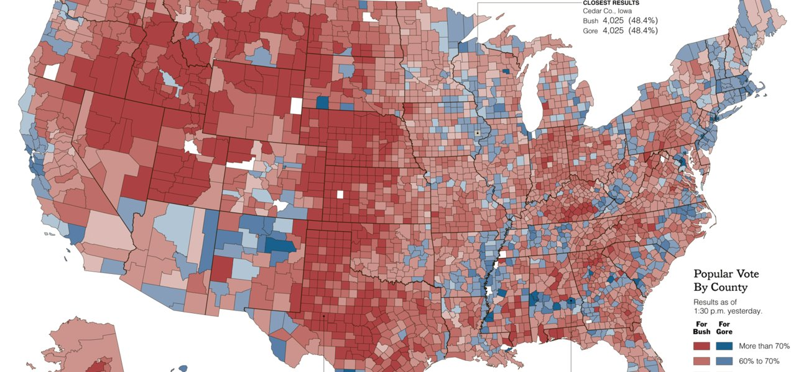

Cloud Computing
More powerful and efficient use of resources by doing computing in the cloud.

For Business and Academia
OpenCPU is open source and can be used both in academics and professional environments.



Analyze, Visualize, Report
Produce plots and graphics that make Excel charts look prehistoric.